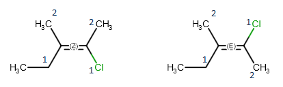

Marvin JS User's Guide
Table of Contents (Start)
Stereochemistry
Both optical isomerism and geometric isomers can be determined in Marvin JS. In order to assign the R or S label to a chiral center and the E or Z label to a double bond, the Calculate stereo button of the General toolbar should be used. The R/S and E/Z labels are determined via webservice.
Marvin JS also supports the enhanced stereo representation for displaying the information we have about the absolute or relative configuration of the chiral centers in a molecule.
Optical isomerism
Optical isomers of a molecule differ in the configuration of their chiral atoms (e.g., a carbon atom with four different substituents). Absolute configuration of a chiral center can be marked by R or S stereo labels. If a carbon atom has four different substituents (or three different substituents and an implicit hydrogens) and at least one of them connects to the chiral carbon with a wedge bond, the R or S label can be calculated using the Cahn-Ingold-Prelog priority rules (CIP convention).
Molecules with one chiral center have two optical isomers (enantiomers) which are the mirror images of each other, but they are not superposable. Enantiomers differ in the absolute configuration of each of their chiral centers.

Geometric isomerism
The reason behind geometric isomerism of alkenes is that rotation around double bonds is hindered, so the position of the double bond substituents is fixed relative to each other. When both double bonded carbon atoms have two different substituents, we can distinguish two non-identical geometric isomers, which are denoted by E and Z labels, respectively. These stereo labels are calculated by determining the priority of the four substituents using the CIP convention. If the higher ranked substituents are on the same side of the double, the molecule is the Z isomers, while the E isomer has the higher ranked groups on opposite sides of the double bond.
